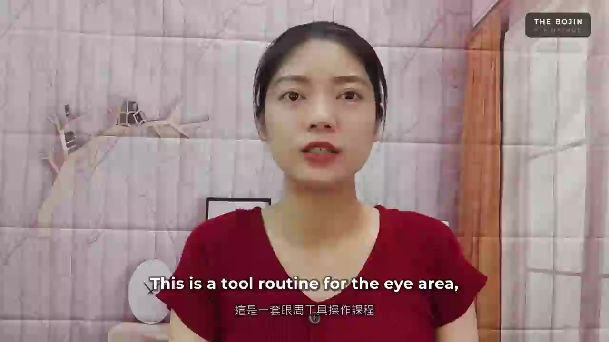

Know your setup.
Learn how to hold your tool and understand the angle before following the route.
YOUR NEXT STEP WITH LAN YU-TING
You have just noticed one small detail. Now watch Lan Yu-Ting show how the tool and guiding hand work together in the full short demonstration.
2 min 44 sec · English audio & subtitles
Watch your free lesson ↓Press play for sound. Pause and replay at your own pace.

MEET YOUR TEACHER
Lan Yu-Ting is the founder of He-He Ya-Chu SPA and an international Bojin teacher. She has taught for more than a decade and guided more than 1,000 learners, including complete beginners.
Her teaching uses clear steps, attention to your practice, and review videos you can return to as you learn.
Read her story on the official site →See her teaching on YouTube →
From one technique to a complete practice
The free lesson gives you a glimpse of the method. The full course brings the setup, both sides, guiding hand, and finish together.
Learn how to hold your tool and understand the angle before following the route.
Work through the left-eye practice, then the right, with a dedicated lesson on your guiding hand.
Review common mistakes and learn how the hands-only finish and Complete Eye Ritual fit into your practice.
The Bojin Eye Method
Core lessons M1–M8 + the Complete Eye Ritual (M10). All included lessons open together after purchase.
Not sure where to begin? Ask a question